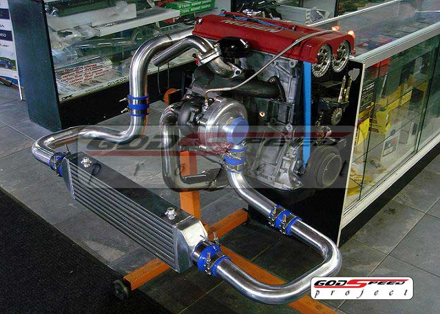

este es el principio del documento!!
clic para ir al final de documento
La serie J es una familia de los motores Honda se trata de la segunda familia de motores V6 introducida en 1996 y que continua en produccion .Los cilindros estan colocados en 60 grados de inclinacion . La serie J se diseno para ser montada en posicion transversal.tiene un diametro mas corto.vielas mas cortas y un siguenal mas pequeno que la serie C ,todos los motores de la serie J actuales son SOHC disenados con 4 valvulas por cilindro y distribusion de valvulas variables (VTEC)
pero cuando lo modificas
nuevo cupé sobrealimentado V6 Accord que manejamos. El discreto cupé morado oscuro no se diferencia de muchos otros acuerdos ligeramente modificados. Ya es una forma elegante, mejorada con la ayuda de un kit de carrocería de fábrica de Honda. La suspensión se baja a través de los muelles de Comptech, apoyando el cuerpo sobre su O.Z de 18 pulgadas. Ruedas Superleggeria y neumáticos 225 / 40ZR-18 BF Goodrich KDW.
si gustas ver un video de un carro con uno de estos motores da clic aqui
La serie B de Honda son motores de cuatro cilindros en línea DOHC. Se instalaron en varios automóviles fabricados por Honda entre 1989 y 2001. Se vendió al mismo tiempo que la Serie D, con la diferencia de que estos últimos eran motores SOHC de única leva, pero diseñados como una opción más económica. La serie B se dirige más como una opción de rendimiento, con motores DOHC de doble árbol de levas, junto con el primer uso del sistema VTEC disponible en algunos modelos. La serie B
pero cuando lo modificas
Acura Integra. El bloque de cilindros B18 está hecho de aluminio, la altura de la plataforma es de 211.84 mm y el diámetro del agujero es de 81 mm. Dentro de esta unidad, se instalaron un cigüeñal de carrera de 89 mm y barras largas de 137 mm. La altura de compresión de los pistones fue de 30.1 mm y todo esto garantizó 1.83 litros de desplazamiento
En la parte superior del bloque de cilindros, se instaló un cabezal DOHC no VTEC de 16 válvulas. El diámetro de la válvula de admisión era de 31 mm, el diámetro de las válvulas de escape era de 28 mm, el diámetro del vástago de la válvula era de 6,6 mm.
si gustas ver un video de un carro con uno de estos motores da clic aqui
|
b18 |

b18 turbo |
J32A2), resortes mejorados y un turbocompresor de 72 mm. Disparó a 739 caballos de fuerza con un turbo de 64 mm, pero en el turbo de 72 mm puede hacer alrededor de 800-900 caballos de fuerza. En el 2016 Pikes Peak Airstrip Attack, el Civic estableció una velocidad de trampa de 189.39 mph con 900 caballos de fuerza y ??31 psi de impulso. El Civic tiene una transmisión Acura TL Type-S de seis velocidades.g

J32